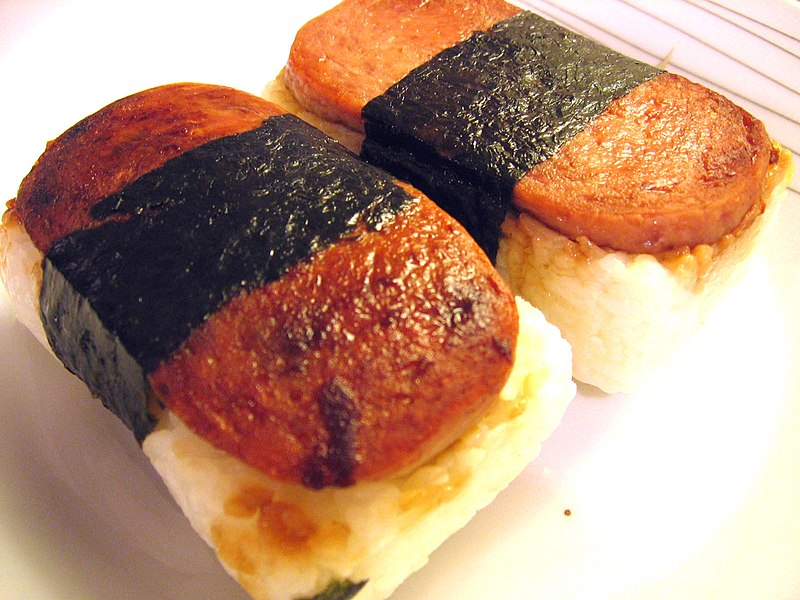

Spam Musubi

Description
Spam is an affordable protein option. Here is a
filling and nutritious meal using Spam, originating
in Hawaii with a Japanese onigiri style.
One of these works well for lunch - make a couple
if you're thinking about having this for tea!
Ingredients
- Nori sheet
- Spam
- Egg
- Cucumber and carrot
- Rice
- Milk
- Teriyaki sauce
- Salt and pepper
Steps
- Chopping board time - cut up your cucumber length
wise, grate your carrot and slice your Spam into roughly
six pieces. Only two slices will fit into one musubi, most
likely, but you can refridgerate the rest! Take out your
nori sheet and put the veggies on there.
- Fry your spam for about 2-3 minutes on each side,
until they are both lightly crisped. You don't need to
worry about using any oil but marinating in teriyaki can
add a lot of flavour! Pop the slices on your nori.
- Boil your rice over high heat or microwave then
place on your nori.
- Time to scramble! Combine an egg and milk in a
mixing bowl with a whisk and add in a pinch of salt
and pepper. Once it has gone yellow, melt butter
in your pan. You're going to want to keep your
temperature on the low side of medium as you add your
egg mixture. Use a rubber spatula to stir the eggs,
scraping the bottom of the pan with each motion.
- Once you've put your scrambled eggs in your nori,
roll everything up. Enjoy!